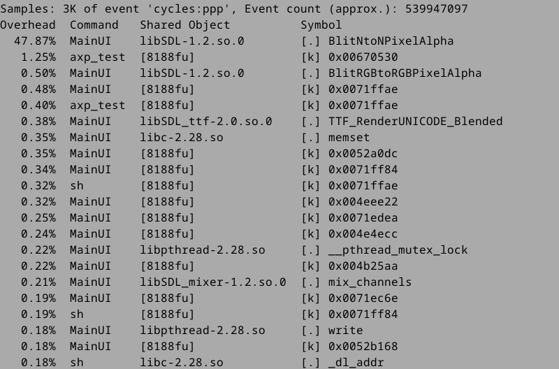

Steward
分享是一種喜悅、更是一種幸福
掌機 - Miyoo Mini Plus - 分析Perf Segmentation fault問題
問題如下：
# export LD_LIBRARY_PATH=lib
# ./perf record -p 1054
Segmentation fault
分析如下：
# gdb ./perf record -p 1054
(gdb) r
Starting program: /mnt/SDCARD/perf/perf record -p 1054
warning: Unable to find libthread_db matching inferior's thread library, thread debugging will not be available.
Program received signal SIGSEGV, Segmentation fault.
0x00492ff0 in snprintf (__fmt=0x5975ec "%s%s", __n=4096, __s=0x1cacec0 "")
at /opt/mmiyoo/arm-buildroot-linux-gnueabihf/sysroot/usr/include/bits/stdio2.h:67
67 /opt/mmiyoo/arm-buildroot-linux-gnueabihf/sysroot/usr/include/bits/stdio2.h: No such file or directory.
(gdb) bt
#0 0x00492ff0 in snprintf (__fmt=0x5975ec "%s%s", __n=4096, __s=0x1cacec0 "")
at /opt/mmiyoo/arm-buildroot-linux-gnueabihf/sysroot/usr/include/bits/stdio2.h:67
#1 perf_event__synthesize_kernel_mmap (tool=0x5d7918 <record>,
process=0x41d460 <process_synthesized_event>,
machine=machine@entry=0x1ca4da0) at util/event.c:714
#2 0x0041ded4 in record__synthesize (tail=tail@entry=false,
rec=0x5d7918 <record>) at builtin-record.c:792
#3 0x0041ee6c in __cmd_record (rec=0x5d7918 <record>, argv=<optimized out>,
argc=0) at builtin-record.c:916
#4 cmd_record (argc=0, argv=<optimized out>, prefix=<optimized out>)
at builtin-record.c:1700
#5 0x004859e0 in run_builtin (argv=0xbefffe08, argc=3,
p=0x5d89ec <commands+84>) at perf.c:357
#6 handle_internal_command (argc=3, argv=0xbefffe08) at perf.c:419
#7 0x0040f674 in run_argv (argv=0xbefffb68, argcp=0xbefffb6c) at perf.c:609
#8 main (argc=<optimized out>, argv=<optimized out>) at perf.c:609
Crash Point
int perf_event__synthesize_kernel_mmap(struct perf_tool *tool,
perf_event__handler_t process,
struct machine *machine)
{
...
size = snprintf(event->mmap.filename, sizeof(event->mmap.filename),
"%s%s", mmap_name, kmap->ref_reloc_sym->name) + 1;
這個Crash的點真的蠻奇特，找了一下，還是找不出問題，使用如下Workaround就可以解決
int perf_event__synthesize_kernel_mmap(struct perf_tool *tool,
perf_event__handler_t process,
struct machine *machine)
{
return 0;
}
雖然缺少一些Kernel資訊，不過，用來找出User Application的效能瓶頸，這樣的解決還是可以接受的
# export LD_LIBRARY_PATH=lib # ./perf record -p 1054 # ./perf report
